这几题决定整体节奏，比单个景点重要。
按区域分组 —— 同一组里的点彼此都很近，安排在同一天最省时间。 不用每条都表态，把明显想去和明显不想去的点掉就够了。
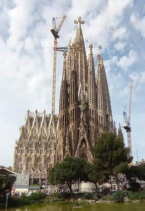
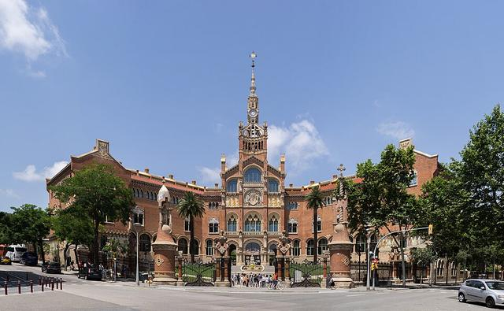
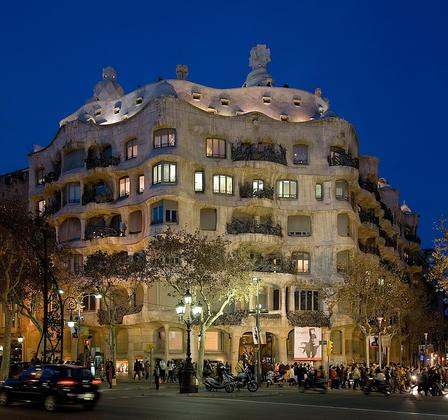
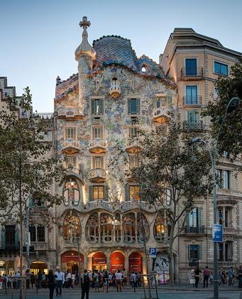
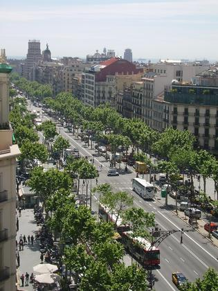
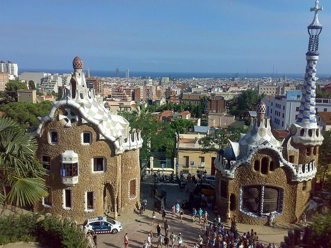
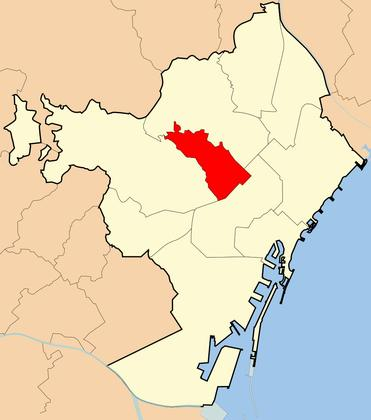
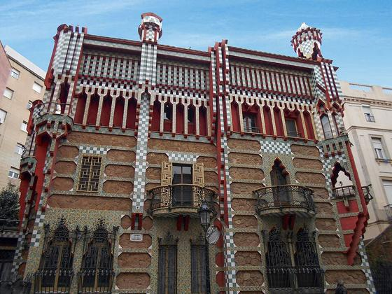
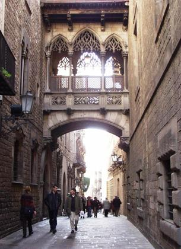
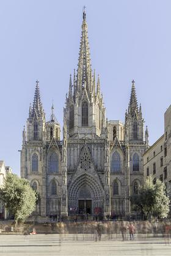
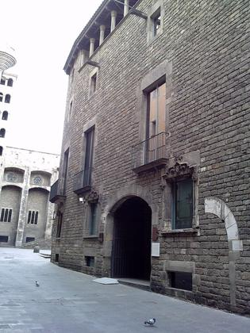
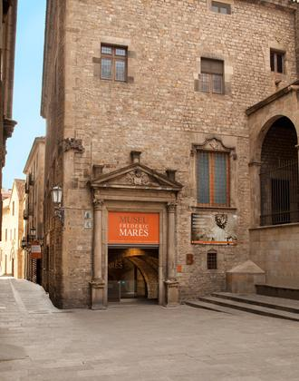
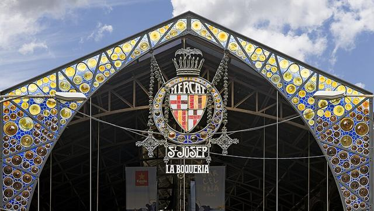
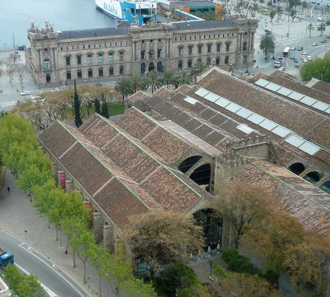
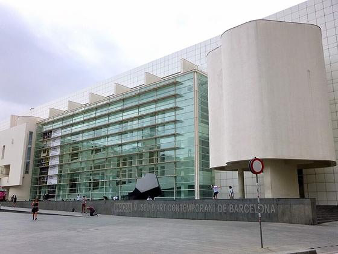
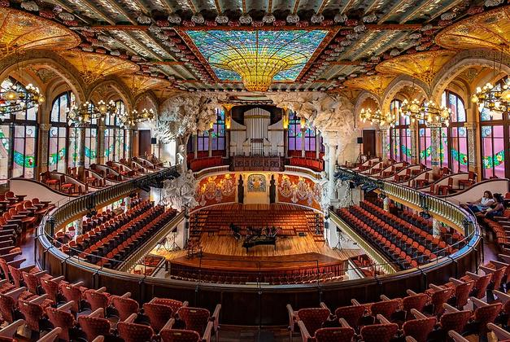
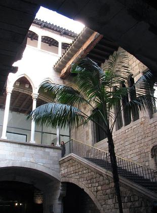
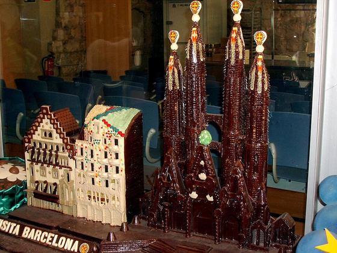
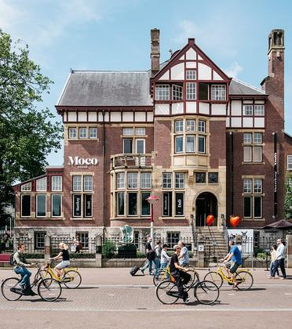
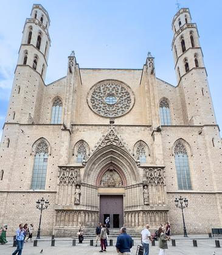
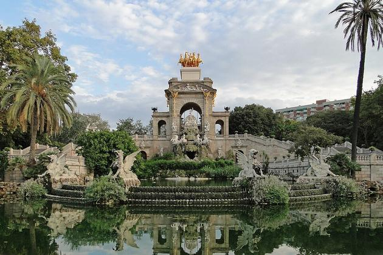
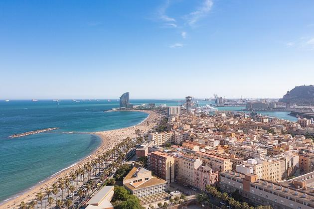
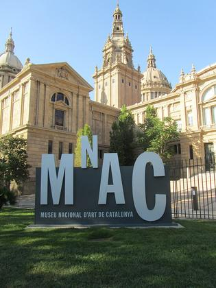
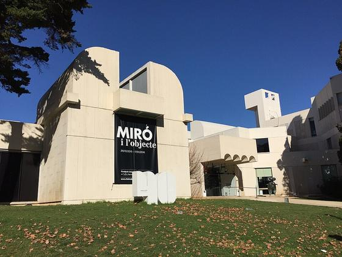
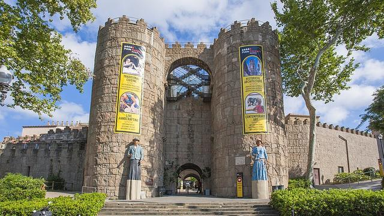
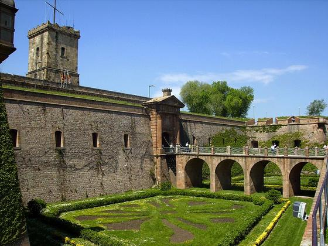
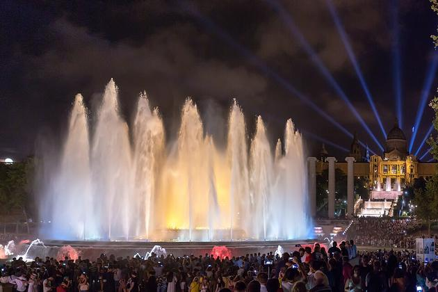
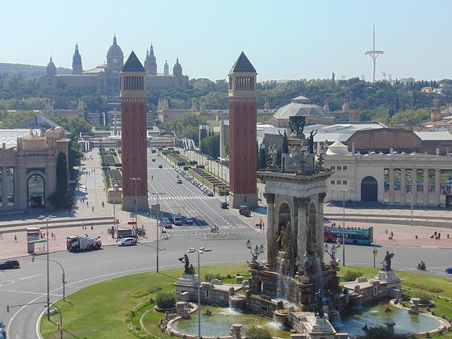
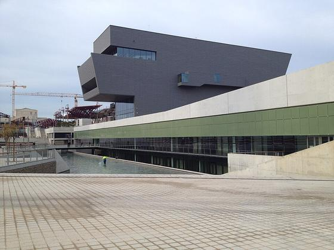
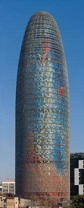
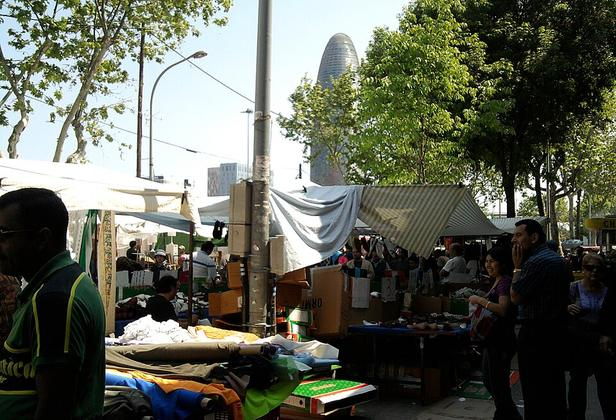
只有已订的票是固定的。等你们的选择回来之后，我再把第二步挑中的点按区域塞进这些空当里。
飞了 20 多小时。目标只有两个：把行李放下，撑到当地时间 23:00 再睡。
上午被票锁死，12:30 之后全天自由。桂尔公园离圣家堂打车只要 12 分钟，是顺路的。
全程最满的一天：两栋高迪之家都在今天，中间隔 1.5 小时。别想在两馆之间吃正经午饭 —— 西班牙厨房 13:00 才开，12:00 进店只有游客菜单。中间喝杯咖啡、逛 Passeig de Gràcia 就好，15:00 从米拉之家出来再正式吃午饭，这才是本地人的时间。
唯一一整天没有任何锁的日子。魔幻喷泉只有这天能看（10/11 起停演维护）。
真实可用约 2 小时 45 分。行李存 Sants 之后再活动，只在 Sants / 西班牙广场范围内走。
公寓有厨房，但不用你们自己做 —— 巴塞有不少上门私厨服务，买菜、做、收拾全包。
| 项目 | 什么时候订 | 为什么 |
|---|---|---|
| 桂尔公园 | 9/30 下午 | 每小时限 1400 人，10 月热门时段提前售罄 |
| 毕加索博物馆 | 定下哪天之后 | 官网建议提前至少一天 |
| Los Tarantos 弗拉门戈 | 定下哪晚之后 | 场内先到先坐，提前 15–20 分钟到场 |
| 加泰罗尼亚音乐宫 | 想去就尽早 | 只能跟导览进，场次有限 |
西班牙人午餐 13:30–16:00，晚餐 21:00–23:00。20:00 以前进餐厅基本只有游客。很多厨房 16:00–20:00 完全不营业 —— 下午饿了只能找 tapas 吧
西班牙午饭吃到 15:00–16:00，之后店铺和厨房大多休息到 20:00。与其硬撑，不如跟着当地节奏：午饭后回住处睡 1 小时，19:00 再出门，晚上精神好得多。行程里已经留出这段时间
4 个人打车往往比地铁划算，市区内大多 €8–15。地铁单程 €2.65，T-casual 10 次票 €12.55 可多人共用。Uber / Cabify / Free Now 都能用
不强制。满意的话留零头或 5%，不留也完全正常
巴塞扒手世界闻名，暴力犯罪极少。高危：兰布拉大道、地铁 L3、波盖利亚市场、海滩。手机别放桌上，包别挂椅背
刷卡通用，小酒吧可能有 €10 最低消费。建议带 €100 左右现金备用
112，全欧洲通用，免费，有中文转接